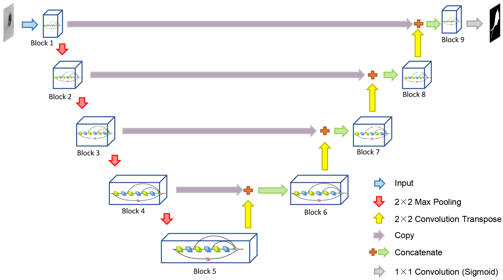
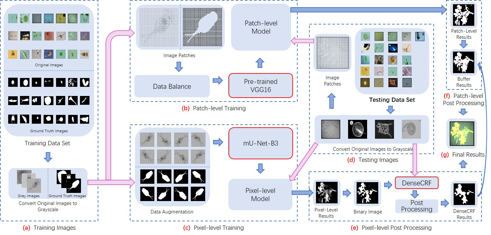

Jinghua Zhang Ph.D. candidate College of Intelligence Science and Technology, National University of Defense Technology, China Center for Machine Vision and Signal Analysis, University of Oulu, Finland Research Interests: Deep Learning; Pattern Recognition; Biomedical Image Analysis E-mail: jinghua.zhang{at}oulu.fi; zjh{at}nudt.edu.cn; zhangjingh{at}foxmail.com
Applications of artificial neural networks in microorganism image analysis: a comprehensive review from conventional multilayer perceptron to popular convolutional neural network and potential visual transformer
Jinghua Zhang, Chen Li, Yimin Yin, Jiawei Zhang, Marcin Grzegorzek
in Artificial Intelligence Review, 2022.
[Paper]
[Bibtex]

LCU-Net: A Novel Low-cost U-Net for Environmental Microorganism Image Segmentation
Jinghua Zhang, Chen Li, Sergey Kosov, Marcin Grzegorzek, Kimiaki Shirahama, Tao Jiang, Changhao Sun, Zihan Li, Hong Li
in Pattern Recognition, 2021
[Paper]
[Bibtex]
[Code]

A Multiscale CNN-CRF Framework for Environmental Microorganism Image Segmentation
Jinghua Zhang, Chen Li, Frank Kulwa, Xin Zhao, Changhao Sun, Zihan Li, Tao Jiang, Hong Li, Shouliang Qi
in BioMed Research International, 2020
[Paper]
[Bibtex]
[Code]
Academic Service
Reviewer of IEEE Transactions on Circuits and Systems for Video Technology
Reviewer of IEEE International Conference on Multimedia & Expo
Address
Center for Machine Vision and Signal Analysis, P.O.Box 4500 FI-90014 University of Oulu, Finland.